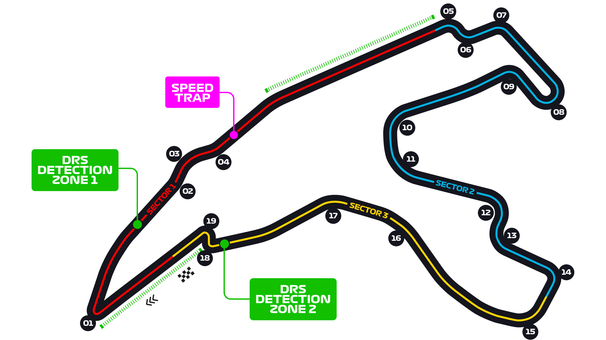
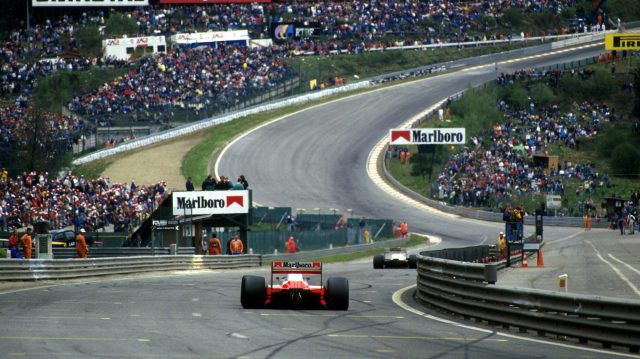
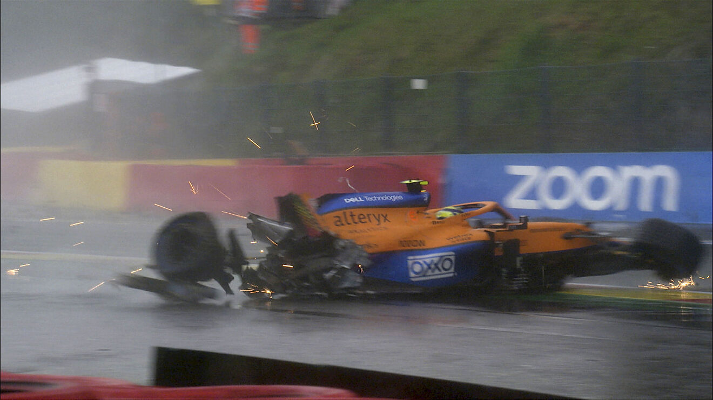
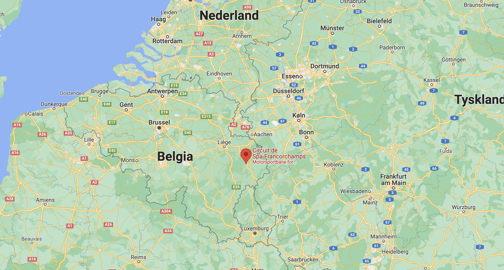
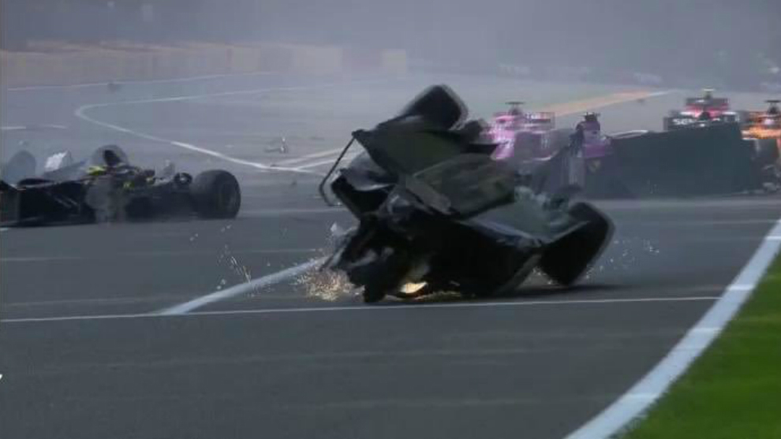
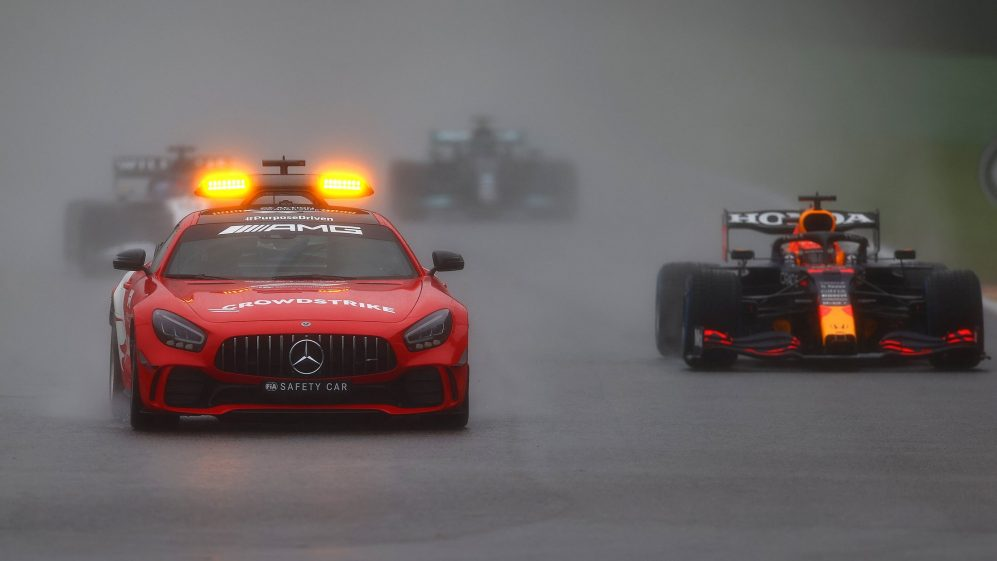
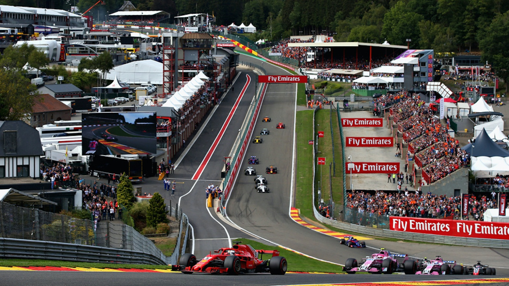

Circuit de Spa-Francorchamps






Belgias formel 1 bane "Spa-Francorchamps" ligger dypt inne i de Ardennske skogene og er en av de raskeste og farligste banene på kalenderen. Den er verdenskjent i racingmiljøet for svingene i "Eau Rouge", et svingkopleks med en venstresving, høyresving og venstre igjen etter en lang nedoverbakke hvor de kommer inn i første sving i rundt 300 km/t. Eau Rouge har en høydeforskjell på 35 meter fra laveste punkt til det øhyeste og dagens formel 1 bilder bruker i underkant av tre sekunder på denne seksjonen. Denne høydeforskjellen gjør Eau Rouge til en vanskelig del av banen og vi har sett mange svære kollisjoner opp gjennom i akkurat dette partiet av banen. En av de største far Antoine Hubert som døde etter en krasj der i formel 2 i 2018, og den seneste var Lando Norris i Q3 i år da han mistet grepet over toppen av Eau Rouge og traff veggen i svært høy fart. Banen er også kjent som en av de eldste formel 1 banene i verden og den var en av banene som va remd i den aller første sesongen sammen med blant annet Monaco og Silverstone i England.
Belgias Grand Prix 2021 var et løp ganske utenom det vanlige. Etter en utrolig spennende kvalifisering på lørdag preget av store mengder regn som blant annet skaffet Verstappen pole position og George Russell sin beste kvalifisering som nummer to, ble løpet veldig kort. På søndagen så vi for mye regn og løpet ble utsatt i først 1 time, så to timer og til slutt tre timer før de bestemte å prøve å starte racet bak sikkerhetsbilen i et desperat forsøk på å få bilene på banen. Etter to runder fortsatt bak sikkerhetsbilden ble det bestemt av kjøreforholdene var for farlige og at racet skulle stoppes. Det ble ikke noe mere kjøring den dagen og Belgias GP 2021 ble et av 6 løp i formel 1 historien til å gi ut halve poeng siden under 75% av løpslengden var gjennomført. Det har også rekorden for det korteste løpet gjennom tidene. Rekkefølgen på førerene ble da bestemt ut i fra kvalifiseringen, noe som ga Verstappen Seieren og Russell sin første pallplassering.





Fun Facts:
Spa-Francorchamps er 7.004 km lang, den lengste banen på kalenderen. Den er egentlig 4 meter for lang i følge de offisielle FIA reglene.
Siden det første racet på banen i 1950 har formel 1 sikuset kjørt der 54 ganger.
Banens kjappeste runde ble satt av Valtteri Bottas i 2018 med en tid på 1:46.286